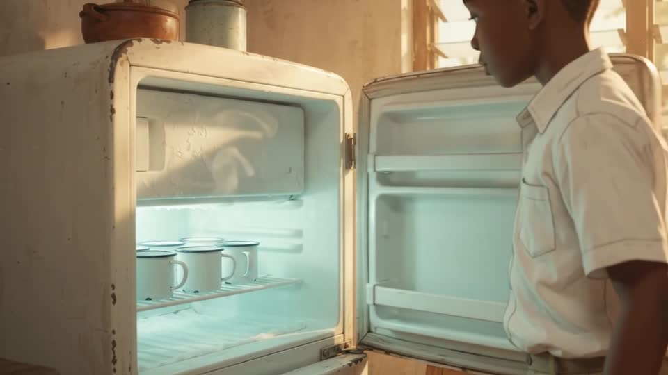
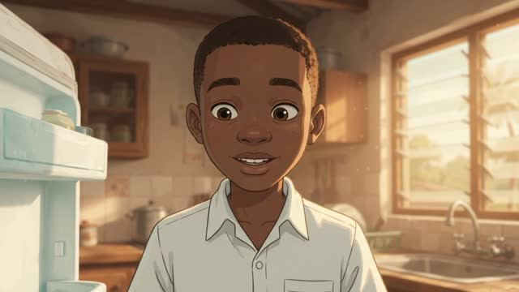
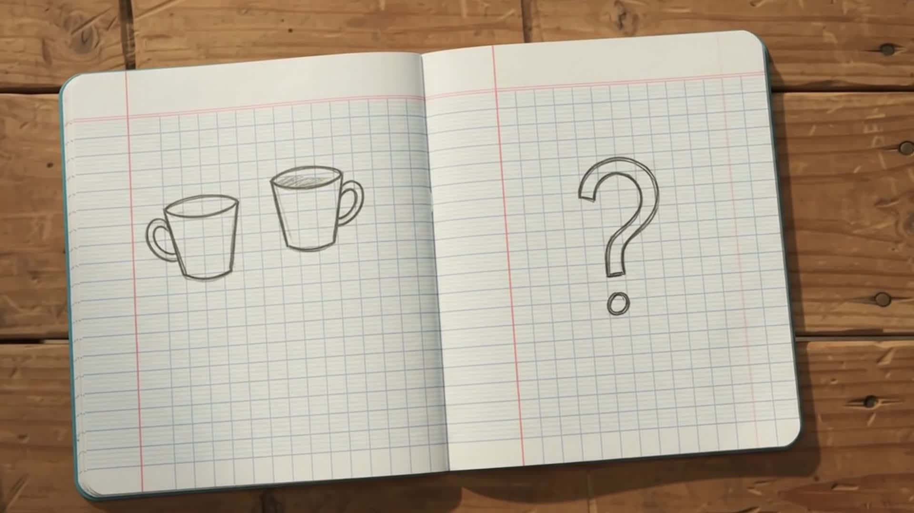

CHAPTER 01
THE KITCHEN
Magamba Secondary School
1963
freezer: no room to wait
Usambara Mountains · north-eastern Tanganyika
Ice cream
1. boil the milk
2. add sugar
3. let it cool
4. into the freezer

later…
ice
still liquid

“The answer I can give is
that you were
confused.”
— his teacher, as Mpemba recalled it

SCRATCH VO